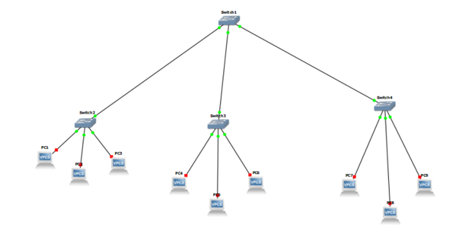
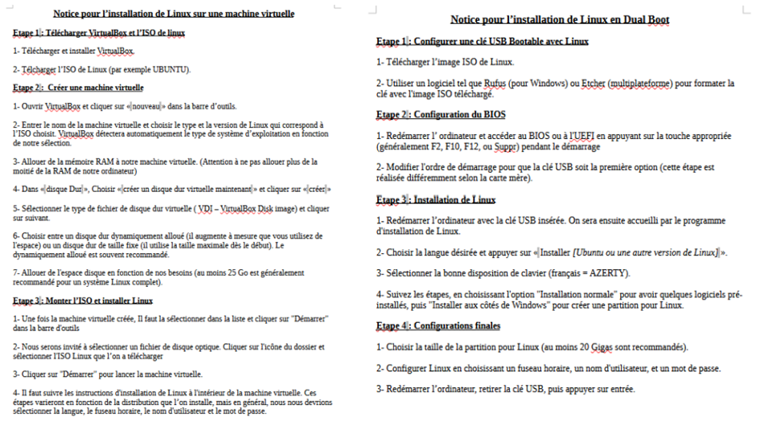
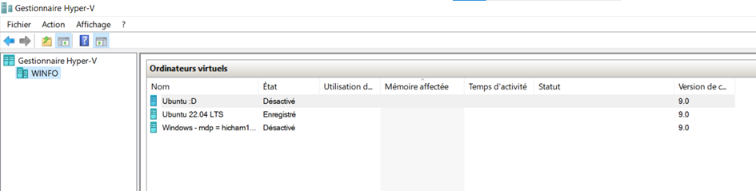
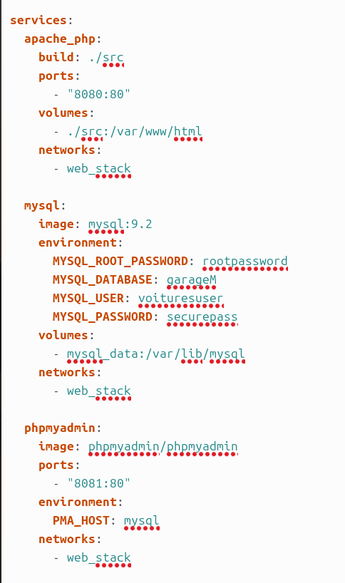
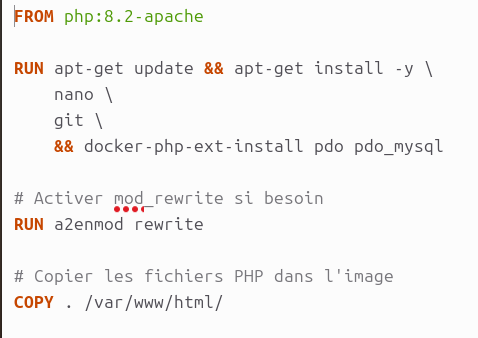
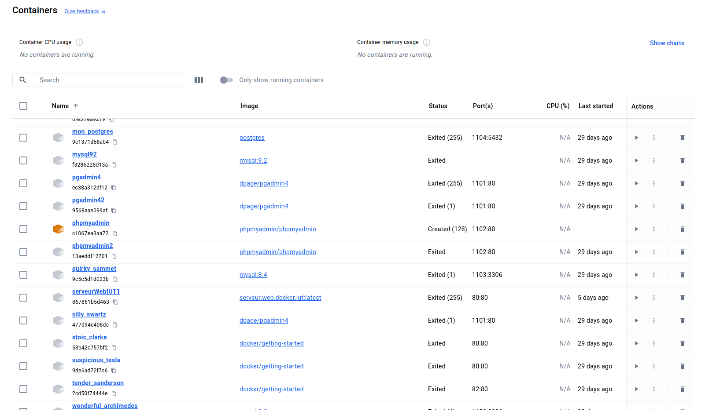
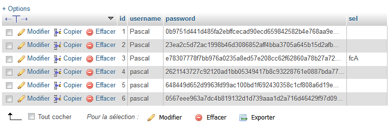

Nous avons, lors de la première année, appris à identifier les différents composants, leurs utilités, ainsi que la navigation dans le système d’exploitation Linux à partir du terminal.
Trace 1 : Nous avons réalisé un schéma sur l'application GNS3 où nous avons relié plusieurs appareils à un réseau local via un switch, en modifiant leurs adresses MAC pour qu'ils puissent communiquer entre eux (AC2).
En première année ainsi qu’en deuxième année, nous avons appris à installer Linux Ubuntu ainsi que Windows en dual boot ou en machine virtuelle sur des machines, dans le but de se familiariser avec le monde professionnel et que l’on soit capable de préparer un poste de travail.
Trace 2 : Notice d’installation réalisée afin d’installer Linux Ubuntu dans les deux façons.
Trace 3 : Utilisation de l’application « Gestionnaire Hyper-V » afin d’installer Linux et Windows dans des machines virtuelles.
En deuxième année, j’ai acquis des compétences dans l’utilisation de Docker afin de déployer et exécuter localement des applications web, notamment dans le cadre des projets de SAÉ. J’ai mis en place des environnements complets incluant des bases de données avec MySQL et phpMyAdmin, ainsi qu’un serveur web avec Apache. J’ai également utilisé pgAdmin et Postgres Admin pour la gestion de bases de données PostgreSQL.
Trace 4 : (extrait du fichier docker-compose.yml qui contient toutes les images et les configurations qu'on souhaite installer)
Trace 4.1 : (extrait du fichier Dockerfile qui permet d'installer les dépendances)
Nous avons également appris à virtualiser une application à l’aide de Docker, afin de l’exécuter dans un environnement isolé grâce à l’utilisation de conteneurs. Nous avons mis en place des environnements multi-conteneurs en utilisant la composition de services via Docker Compose.
Trace 5 : Capture d'écran des conteneurs dans docker, que j'ai créé lors des différents projets, pour différents usages
Lors de notre SAE portant sur une application web de gestion de poursuite d’étude, nous avons appliqué les principes de la CNIL afin de sécuriser l’application et de protéger ses données (tel que le cryptage des mots de passe dans les bases de données et d’autres).
Trace 6 : Capture d'écran de la base de donnée phpmyadmin, contenant les utilisateurs avec leurs mots de passe hachés
Pour conclure, je pense avoir acquis cette compétence, car je me suis globalement senti à l’aise avec ses différents aspects que nous avons abordés, même si j’éprouve encore quelques difficultés avec les schémas réseaux, notamment pour les assembler et les comprendre.